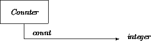
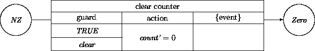
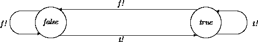
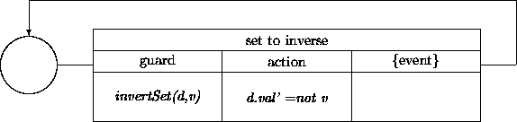
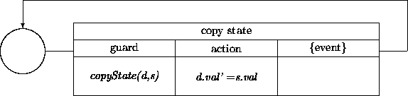
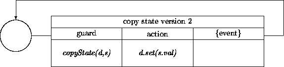
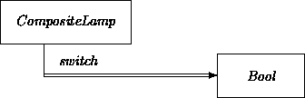
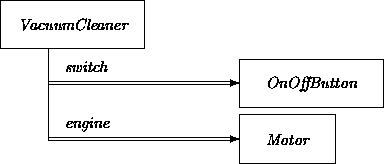

|
Chapter 16: Description and Computation |
In this chapter, we introduce technical details surrounding functional class design. The basic strategy is to collect analysis information describing class features and tie them together as abstract classes. The computational side of these classes is designed through the definition and use of other components. We illustrate with a few ridiculously simple classes.
Analysis models define features and constraints using constructs that describe properties of objects, but are not themselves objects. This descriptive information forms the basis for abstract classes. For example, a simple Counter may be described as an object that always possesses a count property, as well as operations (transitions) such as clear that change that property. This class might be described via OAN models including:


The count property is a value attribute that describes the state of an object. On the other hand, an instance of class Counter is of course an object, and not just a property per se, even though it only reflects a single interesting property and supports state transitions that alter that single property. This would be true even if we designed a Counter class in which no other object could ever ``know about'' the count property.
While we must proceed toward a computationally-based view of objects in OOD, we do not want to lose such declarative information. Maintaining both descriptive and procedural information at the design level increases the chances that computational specifications are correct by construction.
We accommodate this in ODL by supporting the notion of an abstract class that collects static and dynamic information, and recasts it in a form more readily amenable to other design activities. In simple cases, abstract classes just describe a set of value properties, and how they change with transitions. We may collect OOA descriptions pertaining to counter objects and the events they respond to as follows:
class Counter
fn count: int;
inv count >= 0
fn isZero: bool = (count = 0);
init isZero = true
op clear ==> isZero' end
op inc ==> count' = count + 1 end
op dec when isZero then % no effect %
else count' = count - 1 end
end
[We will postpone describing most syntactic details of ODL for a while, and pretend that you are following along. But try to figure it out. We try to keep ODL examples down to the smallest self-contained constructions that illustrate the main ideas.]
Even though it looks somewhat computational in flavor, this abstract class declaration is really just descriptive. It says that counter objects are entities that may be ascribed an integer-valued count property. Other constraints and operations are described with respect to that attribute. Simple status inspectors such as isZero summarize an aspect of the state as a boolean indicator value.
We declare OAN attributes as functions . The count declaration in no way means that any counter object ``directly'' maintains any kind of integer-like internal representation, only that it needs to report the state in integer form when asked. For example, a counter could be implemented by pushing and popping random items onto some kind of stack. The number of items on the stack would correspond to the count, and could be so reported.
At the same time, we would like to ensure that these abstract properties actually hold for any software counter object. We will do so by mandating that implemented versions of classes indeed support descriptive functions such as count. Of course, it is possible to perform object-oriented design without explicitly incorporating such descriptive techniques. In other words, we could just implement an integer-based or stack-based counter without bothering to tie them explicitly to descriptions of what they are supposed to do. Among other disadvantages, this would break all continuity and traceability with respect to analysis models.
In ODL, we provide a very small set of predefined value types (principally bool, int, real, char; see Chapter 17) for use in the definition of abstract classes. We keep this small to facilitate the transition from specification to implementation. Value domains are treated very differently than classes of objects in ODL. Values are ``more abstract'' than objects. For example, the bool value true has no identity, cannot be changed into another value, and does not itself communicate with other objects. It is a raw description. An object with a boolean property does have an identity, may be able to mutate state, and may partake in interactions with other objects.
The differences between value-based and object-based perspectives are most evident in the separation of ordinary value types from equally ordinary objects whose only role is to maintain such values in the usual ways. For example, we may define class Bool as:
class Bool fn val: bool; op t!: () ==> val' = true end op f!: () ==> val' = false end op set(newVal: bool): () ==> val' = newVal end end
A Bool object always has a bool state of being true or false. But since it is an object, it may change its state. Of course, we can design objects that do not change their states too. We will design quite a few of those.
Some ODL details: We often use capitalization conventions as in this example, with lower-case for value types ( bool) and capitalization ( Bool) for classes. It is a bit confusing at first, but makes things easier later. The characters `` ?'' and `` !'' are acceptable as parts of names. We sometimes use the former for simple ``self-describing'' attributes, and the latter for ``self-describing'' commands. As a degenerate case, we use just `` ?'' itself as a name for value attributes of ``basic'' classes maintaining values of predefined value types, and drop the intervening `` .'' on access. Thus, to cut down verbosity, we alias the Bool val attribute as just `` ?''. For any boolean object aBool, saying aBool? gets its current value.
Classes Counter and Bool contain examples of the two basic ODL dynamic constructs:
Procedure-style (blocking) interaction is a reasonable way to describe elementary operations on elementary classes such as Bool. Even though an operation such as f! is not very ``interactive'' or bidirectional, we stick with established conventions when dealing with basic classes such as Bool. In contrast, the Counter class declared inc, dec, and clear as one-way operations. We could have chosen otherwise in both cases.
Operations may be characterized abstractly by listing their effects using the syntax ==> expr end, where expr is any descriptive expression. The prime (as in val') indicates the state after the transition has completed.
Effects are the main translation constructs for OAN action and event descriptions, as well as simple state changes. For example, the effects for t! and f! correspond to the transition network:

As is the case in analysis (see Chapter 5), the nature of effect descriptions can be a bit arbitrary. With any luck, analysis models have provided descriptions that are ``complete'' while still suppressing ``irrelevant'' details. It is more than common for effect statements to be described via textual annotations rather than these slightly more formal specifications. We will most often use the more structured versions, since it makes further manipulations and transformations easier to describe and illustrate. However, the methods can be used with whatever degree of precision and formality you can obtain from analysis models. The more precisely effects can be described, the easier it is to transform them into executable code. At some point, at some level, this kind of translation needs to be performed.
There are many ways to define classes like Bool. Nothing absolutely forces the definition of a given operation as primitively available within a class. Matters of relative primitiveness are often judgment calls in class design. The set of operations defined for a class should, on the one hand, be minimally complete, describing only those transitions that cannot be defined in terms of others. On the other hand, usability concerns lead to the definition of operations that make common client-side usages simple to express. Pragmatics argue for hiding enough detail that operations may be efficiently implemented without introducing observable dependencies. For example, we might prefer to express Bool::set as the sole primitive, and then define t! and f! in terms of set, or even to define all of them in terms of a toggle primitive. (As here, we use `` class:: op'' when necessary to distinguish the version of op defined in class.)
The tactic of defining basic classes to have minimal yet complete interfaces, and then adding functionality via layered operations rather than mangling existing classes is sometimes called extension by addition [7] . It is a good way of enhancing the maintainability and evolvability of designs. It places some pressure on getting the ``little'' things in a set of class designs right to begin with.
Some heuristics may guide such decisions. If an operation can be phrased as a sequence of other defined, accessible operations on its targets, it should not be listed as an operation of any one of the associated classes. This rule may be balanced with the goal of minimizing arguments to operations.
The simplest kind of layering is the definition of service operations. Operations may accept and/or return either state or object information as message ``arguments'' and ``results''. Also, operations need not be listed within classes if they obtain their effects by coordinating others that are received by participants. For example, we may have a service transition described for some unrelated object:

This might correspond to ODL operation:
op invertSet(dest: Bool, v: bool) ==> dest'? = ~v end
Because it was not embedded in a class, this operation may even be considered as a ``top-level'' utility procedure. Actually, in ODL we do not consider any operation to be truly receiverless. All top-level operations are assumed to be owned by objects of class System. However, we will describe them as receiverless until we get a chance to describe the necessary mechanics (Chapter 18). For another example:

This corresponds to ODL operation:
op copyState(dest: Bool, src: Bool) ==> dest'? = src? end
These operations use combinations of ``pass by description'' or, more familiarly, ``call by value'' (as seen in the value v:bool), as well as ``pass by participation'' or ``call by reference'' (as seen in dest:Bool) to exchange information. There is a big difference between the two. A value argument represents a raw state value that need not be attached to a particular object. An object argument lists a participant in a transition. The participant is not in any sense ``transmitted'' or ``copied'' somewhere. Instead, the operation is given access to the indicated object. A better term (that we will routinely use) is link . The operation is provided with a ``communications link'' to each participating object. Other roughly equivalent terms include ``port'', ``capability'', ``reference'', and ``pointer''. Use of participant arguments is the most common way of transmitting and representing transient OOA acquaintance relations. (We investigate alternatives in Chapter 18.)
These differences represent the familiar territory of value versus reference arguments in many non-OO programming languages and systems. The reason for belaboring them here is that participation in events has a much broader design significance in OOD than elsewhere. When you have access to an object, you might send it messages, change its state, capture its identity for later use, and so on. When all you have is a description, you cannot necessarily do any of these things. This is a more pervasive issue than implementation-level rules for keeping track of ``variables'' versus ``expressions'' in procedural programming languages.
Effect descriptions may include references to other operations. For example, we could have described the previous operation in terms of raw manipulations on Bool. It is conceivable (but very unlikely) that the OAN models already did this:

op copyState_2(dest: Bool, src: Bool) ==> dest.set(src?)' end
Composite operation definitions such as copyState_2 are more like ``scripts'' than descriptions of raw state changes. Because of this, we need not ascribe them as a properties of Bool objects per se, but instead as ``application'' operations that happen to use Bools.
Mentioning a primed operation inside another effect means only
that its effects hold. For example, the effect,
dest.set(src?)'
indicates that the effect of copyState_2 is just the same as
the effect listed under set with the indicated substitutions.
It does not say whether the effect is actually obtained by
invoking set. But it does provide a very strong hint about the
computations that would meet the effects constraints. The hint may
be exploited later, or not. Among other benefits, this ``as if''
interpretation of action specifications allows recovery from
insufficient abstraction in analysis models and other class designs.
Given the form and content of operation copyState_2, we do not have to limit ourselves to purely declarative definitions. The script seems to tell us how to obtain the desired state changes. We are free to commit to those hints and bind constructs to concrete definitions by actually ``coding-in'' the subevents listed in the effects description:
op copyState_2(dest: Bool, src: Bool) { dest.set(src?) }
We have just performed our first (albeit trivial) reification from an abstract to a concrete definition. By binding a code body (within braces) to the operation, we find ourselves actually specifying computation, rather than effects. While things are not generally quite so easy, the ways in which we will list and refine effects often lead to at least one natural computational definition.
It may seem odd that we were able to define concrete operations on abstract objects. Our Bool declaration just listed the abstract properties (or ``capabilities'') of boolean objects, without saying how they are implemented. For purposes of defining copyState, it does not matter how the objects are implemented, as long as they possess the indicated states and operations. It makes no sense at all to introduce such dependencies on internal matters. An essential OO design rule is that participant arguments and other links should always be specified in terms of the most abstract black-box class characterization available.
Concrete operation definitions are not at all replacements for abstract ones. The two provide different kinds of information that happen to look almost identical. But the abstract versions are written from the perspective of analysis -- what, not how -- while the concrete ones are from the perspective of implementation -- how, not what. (For brevity of examples, we will sometimes list both bindings and effects in the same declaration.)
Concrete definitions are also different than abstract ones in that they are maximal. The operation will perform the stated actions and nothing more. Abstract declarations are on the other hand minimal. They require that the operation will obtain at least the stated effects. Other unlisted actions are OK as long as they do not conflict. This enables further refinement in subclasses and operation overrides.
class BOOL is Bool
fn val: bool { % magic % }
op t!: () { % magic % }
op f!: () { % magic % }
op set(newVal: bool): () { % magic % }
end
[ ODL details: `` is'' declares a class as a subclass. The predefined class Any serves as the root of the inheritance hierarchy. It has no attributes or behavior, and is thus defined as class Any end. All other classes declared without an is clause are treated as subclasses of Any. All features declared in any superclass hold in a subclass. Features may be strengthened via redeclaration.]
Again, the capitalization conventions are a bit confusing, but prevent massive awkwardness of expression. To recap, bool is the type of raw boolean state values, Bool is the type of mutable boolean objects, and BOOL is the default implementation of these objects. More descriptive names might be boolean-state-value, mutable-boolean-object-type and default-primitively-implemented-mutable-boolean-object-type. We also use these conventions for int, Int, and INT, and similarly for real and char.
The term default has some significance here. Actually, we should have defined classes MC68KSmalltalkBool, VAXCBool, and so on, to reflect the fact that different interoperable representations are available on different machines, systems and languages. But this would be pretty silly and useless. We use the all-caps form to denote the default version of a primitive object type on the platform implementing the object.
If this bottom-feeding sounds overly implementational and/or paranoid to you, be comforted that now that we have laid down tactics for eliminating representation dependence, we will not have to think about these precautions very much.
The class BOOL is declared as a subclass of Bool, since it obeys all of the characteristics of Bool, but also declares additional (computational) characteristics owing to the binding of features to computational actions (that in this case are undefinable in ODL since they are considered magically primitive).
This is a very different use of inheritance than seen in Part I, where subclassing was employed only to relate the properties of different classes. It is, however, thoroughly reasonable, and meets the
definitions of Chapter 7 if the notion of ``property'' is extended to include computational and representational features. Class BOOL does possess all of the properties of Bool, but is further constrained by commitments about particular ways of representing and computing things. Another way of saying this is that class BOOL conforms to Bool. Any other object or operation demanding something with the properties of Bool could surely use a BOOL object.
... b1: Bool := new BOOL(false); b2: Bool := new BOOL(true); copyState(b1, b2);
[In examples, `` ...'' means ``something has been left out here that must be filled in for the example to make sense''. In this case, the context of the statements has been omitted. They should be encased in some other operation.]
State types, abstract classes, and concrete classes (e.g., respectively, bool, Bool, and BOOL) may be used to define other classes and objects. For a tiny example, suppose we need to define lamps possessing only a simple toggle switch:
class Lamp fn on: bool init= false; op flip ==> on' = ~on end end
[Initial condition constraints may be specified using init=.]
Lamps seem to be related to boolean objects, but are not subclasses of Bool. However, we can still use a Bool to describe compositional details:
class CompositeLamp is Lamp local switch: Bool; inv on = switch? op flip ==> invertSet(switch, switch?)' end end
The switch declares that each lamp knows of, communicates with, and/or otherwise accesses a Bool object. For both better and worse, our notation does not quite capture the OOA conceptual differences between partOf, brotherOf, or any other relationship. They are all expressed via the same link constructs.
Invariant, or inv statements declare constraints that must hold across all states during an object's existence. The declaration inv on = switch.val says that the on state attribute always has the same value as switch's val. This almost, but does not quite say that the state of the lamp should be computed by inspecting the state of the switch. More generally, such inv constraints represent contracts between two objects that must be maintained across all computation. The inv helps further clarify the nature of the relationship (link) between Lamps and Bools. In OAN, this relational invariant might indeed be specified using a parametric relation instance.
In CompositeLamp, we also replaced the effects description of flip with one that is equivalent to the original, but now more clearly delegates responsibility for handling the transition to the underlying component. Delegation of tasks and subtasks is among the chief reasons for using composition in the first place. The CompositeLamp need not know any of the details about how to meet the listed effects of flip if it knows of other objects and operations that do.
The CompositeLamp declaration does not say that a CompositeLamp object has a ``physically embedded'' Bool object, only that it ``knows of'' and (here, exclusively) exploits one. Avoiding, or at least postponing, the issue of representational embeddedness is a key tactic in successful compositional design. Just as blind acceptance of PartOf leads to problems in analysis (Chapter 9), blind representational embedding leads to problems in design. (In Chapter 23, we introduce qualifier packed to express embeddings, but only as a consequence of physical design considerations. )
However, we do want to claim that access to the Bool object is internal to the Lamp, and not part of its interface. Such locals differ from regular ``public'' fns in that they are accessible only internally to the object. The fact that CompositeLamps employ a Bool is irrelevant to any other objects that may interact with them. Suppressing this fact from the interface reduces coupling.
In ODL, any attribute or operation may be declared as strictly internal via qualifier local. This indicates the presence of an attribute without the presence of a public access function, thus supporting basic OO encapsulation rules that hide internal matters from other objects. If one object wants to do something with another, it must somehow determine its identity and issue a publicly listed message to it. If for some reason we did want to make the switch visible to other objects in CompositeLamp, we would have to add a non- local fn to access it. The use of local does not, however, commit to concrete details. Access to the switch might still be arranged through some kind of computation rather than direct binding (see Chapter 17).
These tactics are closer to the spirit of OOA methods than they might first appear. In Chapter 4, we noted that basic attributes might be construed as relations between objects and value domains. In design, object-based relations are links. Components that help support basic attributes are related to their hosts via fns describing private links. However, this similarity also leads to a difference. In design, all but the very most primitive objects are explicitly composite. Thus, even ``simple'' software objects are more like the ensembles described in Chapter 9 than the unprotected classes described in Chapter 3.
The routine commitment to hiding internal features represents a second difference between OOA and OOD. Many OOA models are too trusting. They list attributes for other people to look at. In design, we list the same kinds of attributes, but take special precautions to ensure that other software objects cannot mangle them. We trust other software less than people. Actually, we do not trust anyone. But we can list the switch object here on paper, knowing that you cannot reach onto the page and directly modify switch to turn off the lamp by your side. Without a membrane to protect it, other software objects may well be able to ``reach into'' some poor hapless Lamp and do just that.
For example, compare the OAN description of CompositeLamp with that of the VacuumCleaner example from Chapter 9:


Even though the component of CompositeLamp is much less interesting than those of VacuumCleaner, the same construction strategies apply. Conversely, private local links provide the first step in translating the constituents of OOA-level ensembles. Generally, OAN ``double vectors'' translate into own links, a special stronger version of local described in Chapter 17. (In fact, own would be appropriate even in the present example.)
The CompositeLamp declaration is still incomplete. It does not represent components or bind actions, it just describes them. As always, there are many ways to define concrete versions, but the obvious one is LampV1:
class LampV1 is CompositeLamp
local switch: Bool <>
on: bool { switch? }
op flip { invertSet(switch, switch?) }
end
[We normally give concrete classes names ending in V n, where n is a ``concrete version number''.]
In ODL, all links within concrete classes defined using `` <>'' must be bound to other objects during construction. Here, any fresh Bool object in a false state would do:
myLamp := new LampV1(switch := new BOOL(false));
Constructors may be wrapped within other operations and classes to better hide details, control initialization, maintain defaults, and keep track of instances. Note that constructors form the exception to privacy rules for locals. Constructors must be able to attach links while initializing objects.
A semaphore may be described as an object with a boolean state attribute locked, a wait operation that blocks while locked is false and then atomically sets it to true, and a signal operation to set it back to false. This may be represented as:
class Semaphore fn locked: bool init= false; op wait: () when ~locked then locked' else pend end op signal: () ==> ~locked' end end
The definition of classes such as Semaphore hinges on the fact that the reception of a message such as wait does not always immediately lead to the execution of the corresponding actions. In ODL, the conditions under which the message may trigger are listed in when clauses, which serve as the OOD translation of OOA guards and state-dependent transition specifications. (None of our previous Bool-based examples happened to require state-based guards for any operations.) These when guards are purely descriptive tools, just like effects. In fact `` ==> eff'' is shorthand for `` when ready then eff'', where ready is the topmost level of state abstraction (see Chapter 5). Here, the class definition says that Semaphore objects must pend wait message until they reach an unlocked state. Any number of wait messages may be pending at any given time.
In ODL, when constructs must cover all cases (i.e., there must be a trailing else clause, along with possibly several intervening elsewhens). However, delays are not the only possible alternative outcome. For example, in the Counter class described at the beginning of this chapter, we just ignored dec when the internal count was zero. For illustration, we can recast this using the ODL ``outer'' form of when that lists together all operations that may be triggered in a given state. The two easily intertranslatable forms respectively emphasize the required internal conditions versus the triggering input events in OAN transitions:
class Counter ...
when isZero then
op dec: () ==> end
else
op dec: () ==> count' = count - 1 end
end
end
The lack of any effect in the first clause allows the dec message to be ignored when the count is already zero. (To ensure this, the effect should state count' = count.)
To demonstrate the interplay here, note that by turning the empty effect to `` pend'', and changing the nonblocking inc and dec operations into (renamed) blocking forms, a Counter can be transformed into another common construct, the Count ing Sema phore:
class CountingSemaphore ... op signal: () ==> count' = count + 1 end op wait: () when ~isZero then count' = count - 1 else pend end end
Concrete code bodies must faithfully mirror both effects and synchronization conditions. In ODL, concrete actions within curly braces are assumed to be atomic with respect to external clients, and performed without interruption. In the same way that it is impossible for the effects of both a Semaphore wait and signal operation to hold true simultaneously, we ensure that it is impossible for both a wait and a signal operation to execute simultaneously. For example, a more concrete Semaphore class may be defined as follows:
class SemaphoreV1 is Semaphore
local l: Bool <>
local op set_l_true { l.t! }
locked: bool { l? }
op wait: () { if ~l? then set_l_true else pend end }
op signal: () { l.f! }
end
For illustration, we broke out the concrete action set_l_true from the condition under which it is triggered. While overkill here, this commonly useful tactic enables the separate design and development of actions and their synchronization conditions, as well as the reuse of the same action within different conditions and operations. For convenience, we also sometimes write intermediate forms that are concrete in some effects but not in guards or in alternative clauses. For example:
op wait: () when ~locked then { set_l_true } else pend end
At some point, the whens and pends need to be transformed (see Chapter 19).
Of course, atomicity of actions within each object does not at all preclude concurrency of groups of objects controlled by a single host. Since essentially all design-level classes may have the definitional characteristics of analysis-level ensembles, just about any object may harbor the forms of parallelism described in Chapter 9. For example, consider a class that maintains two counts and has an operation for incrementing both at once:
class DoubleCounter
locals c1: Counter <>; c2: Counter <> end
fn count1: int { c1.count }
fn count2: int { c2.count }
op incboth: () ==> count1'' = count1 + 1, count2'' = count2 + 1
{ c1.inc; c2.inc } end
end
[Sets of local declarations may be grouped together, as here. Also, for expediency, this class collapses abstract and concrete versions. We will sometimes mix descriptions like this while demonstrating abstract and concrete features at once.]
Recall that the original Counter class defined inc as a one-way (nonblocking) operation. Thus, the incboth operation here may issue both requests without waiting for replies from either of them. The subactions may be executed independently and concurrently. One-way sends serve as a translation of OAN send-and-forget messages listed in the Events box of transition descriptions. They may also be used to obtain multiple independent ``simultaneous'' logical transitions.
Here, because inc is nonblocking, the incboth operation cannot itself contain any guarantees about when the desired effects hold, only that they will take place sometime after the operation triggers. This may be all that is desired. Such effects are indicated in ODL using a double-prime to mean ``eventually''.
Generic (or parametric) classes are those that define a whole family of related classes, differing only in matters concerning one or more types that are used as arguments to the class declarations. Generic classes are most useful for defining various ``collections'' including those described in Chapter 18.
In ODL, generic classes and operations defined on them are declared with one or more type parameters within [...]. These classes may be instantiated by supplying actual types. We maintain the convention of giving upper case names to generic classes and operations. Generic classes may be subclassed in parametric or instantiated form. For example:
class STACK[T]
fn length: init= 0;
fn empty: bool = (length = 0);
fn top: opt T;
op push(x: T): () ==> top' = x, length' = length + 1 end
op pop when ~empty then length' = length - 1 end
end
op clear[T](s: STACK[T]) ==> s.empty'
{ while ~s.empty do s.pop end } end
class REVERSIBLE_STACK[T] is STACK[T] ... op reverse; ... end class WindowStack is STACK[Window] ... fn currentlyDisplayed: bool; end op display(s: STACK[Window]);
Here, push and clear are operations defined on any kind of stack, while display is defined only on stacks of Window objects.
ODL classes describe objects. Like OAN models, they list attributes, dynamics, required initial conditions and invariants. Classes themselves do not define the facilities, rules, and related processing needed to generate objects of a given class.
Managing construction is a classic trade-off between flexibility and encapsulation. For maximum flexibility, we would like to be able to construct concrete objects by just asking that a set of links be attached in the desired way within some newly generated software entity. For maximum reliability and security, we would like to restrict the rights of other objects to create new instances while simultaneously gathering up all construction policies, defaults, and related processing in one place, to make it easy to evaluate correctness. For illustration, we adopt constructs and policies that are compatible with a range of conventions commonly seen in OO systems, from free-form binding to the mandated use of arbitrary forms of metaclasses.
We assume that a new operation is associated with each concrete class. The new operation has the special argument syntax of accepting pairs of bindings (or simple state values in the case of primitives). However, if a class specifies one or more generator class(es), then new is disabled at top level, and is only available from within these generators. The effect of mandating uniform metaclass-based generators may be obtained using the policy of always specifying one generator per concrete class. We will increasingly add further capabilities to such generators.
Even though they are not really parts of the target classes, generators are intimately tied to them. They must ensure that all stated invariants and initial conditions hold. For example, we may add a class that hides the messy details of making new LampV1 objects:
class LampV1 is Lamp ...
generator LampV1Gen
end
class LampV1Gen ...
op mk(initstate: bool) l: unique LampV1 {
l := new LampV1(switch := new BOOL(initstate)) }
end
By convention, we usually call basic constructor-wrapper operations `` mk''. As discussed in Chapter 17, `` unique'' here indicates that each invocation generates a different instance as its result.
Note that the constructor in this example needs to commit to a particular concrete version of Bool (just the default BOOL) to actually create the inner component. It could not have listed it as just Bool since Bool is an abstract class, and we need a concrete object. Our list all types as abstractly as possible design rule requires that we almost always postpone selection of linked concrete object types to constructors.
This rule also implies that we may have several different generator classes, or just different constructive operations in the same generator for LampV1 objects, each making a different choice about concrete components. For any given class, there may be several reasonable ways to construct objects. For example:
class LampV1Gen ...
op dflt: unique LampV1 {
reply new LampV1(switch := new BOOL(false)) }
op clone(x: LampV1): unique LampV1 {
reply new LampV1(switch = new BOOL(x.on)) }
end
Our LampV1Gen class provides a set of concrete operations special to LampV1 objects. To reflect the fact that there are many ways to represent Lamps concretely, we can elevate our manager declaration into one that holds for any Lamp manager class:
class LampGen fn defaultInitState: bool init= false; op setDefault(b: bool): () ==> defaultInitState' = b end op dflt q: unique Lamp ==> q.on = defaultInitState end op mk(initstate: bool) q: unique Lamp ==> q.on = initstate end op clone(p: Lamp) q: unique Lamp ==> q.on = p.on end end
class LampV1Gen is LampGen ... end
All of the operations are now expressed abstractly. They may be implemented in different ways in concrete subclasses. This chain of transformations is almost the reverse of property-driven design. Instead of starting with some properties, and then finding concrete classes to make good on them, we started with some concrete chores to be supported, and derived a common property-based interface. (For the sake of brevity, we will often use new expressions or isolated construction procedures in future examples, with the understanding that they should be grouped into appropriate generator classes that may in turn be given abstract interfaces.)
We will further examine the role of OO dispatching (message binding, resolution, and routing) in Chapter 21. But this is a good opportunity to introduce some issues that dispatching is meant to solve.
The encapsulation of construction within generators leads to a new design problem. When we were content to just use new, we imagined that there was a supervisor object sitting there to ``catch'' the request and do the right thing. But when construction details are encapsulated within special classes, any client wishing to create a new LampV1 object must know of a generator object out there willing to make one. However, this introduces object coupling. We do not want to mandate hard-wired knowledge of generators inside clients. We remedy this via special dispatching policies that support a simple form of ``call by role'', or ``object dispatching''. This is one way to further postpone resolution of acquaintance relations (see Chapter 6).
The basic idea of object dispatching is for a supervisor object to accept a message nonspecifically addressed to any object of a given class, and then to route it to some particular object (of its choosing) that can service it. We may just assume ``random routing'' that arbitrarily selects any object of the required type. (We will later describe how to attain more selective policies.) In ODL we indicate these requests using `` $'':
op lampUser { local l: Lamp := LampGen$dflt; ... }
Object dispatching liberates designs from undue object identity coupling. In fact, it may be possible to fully replace all identity-based communication with strategies in which clients provide only the necessary descriptive properties of target objects rather than their identities. However, the cost of doing so often makes this option thoroughly impractical. For example, consider the descriptive measures needed for a CompositeLamp object to identify the Bool object that serves as its switch every time it performs flip.
Even though testing issues are more bound to the implementation phase than to design, many design methods are centered around the notion of design for testability, bridging OOA models with computational designs. These methods increase the likelihood that class designs solve the right problem, and that class operations execute in the right way.
The implementation of every concrete class ought to obey the constraints described by its abstract superclass(es). So far, we have focused on transformations and refinements that enhance the likelihood that concrete classes are correct with respect to these abstract specifications. However, the work involved in transforming textual and approximate descriptions into executable expressions is also repaid in the design of unit tests for classes. The opposite also applies, perhaps even more so. In practice, writing self-tests at the same time that classes are designed is a productive way to discover well-specified constraints, effects, and the like.
A set of tests may be designed relating each abstract class to any and all concrete subclasses. Two principal kinds of tests, constraint checks and trace checks, may be mixed and matched as needed.
Invariant (`` inv'') constraints may be codified as self-check functions. These may in turn be used as run-time assertions within test suites and/or placed in code attached to run-time exceptions within concrete classes themselves. For every concrete class, you might define an operation invCheck that collects and evaluates all computable invariants for the class. For example, CounterV1::invCheck should check that count >= 0. Invariants need not be readily or even feasibly computable within a class. However many are, and most others may be approximated for testing purposes.
An invCheck operation might be invoked only during testing. But it may also be invoked during system execution, especially after particularly tricky operations. It might even be invoked by a daemon object that periodically inspects system integrity. Constructors inside generator classes also form convenient places to define many tests. Constructors create new objects that must:
We have already seen how constructors may be grouped into manager classes. Beyond their organizational role, the effects descriptions of their component constructor operations help to describe the minimal requirements of construction across a set of subclasses.
Outside of constructors, invariant expressions and qualifiers may be checked by evaluating them at the beginning and/or end of any or all concrete operations. While these invariants may be temporarily broken within the body of any operations, each concrete action body has the obligation to patch constraints back together. This reflects the guarantee that if the invariant holds before the operation fires, then it still holds on completion. Class invariants are the same as loop invariants (see, e.g., [6]) except they extend across different operations, rather than parts of a single operation. (In fact, if object computation is conceptualized in terms of the event driven loop of Chapter 15, these notions may be treated as equivalent.)
Similar remarks hold for effects defined using `` ==>'' for abstract operations. However, since effects may refer to both ``before'' and ``after'' states of participant objects, they cannot be evaluated automatically. It is usually easy to define associated test functions manually by keeping track of initial and final properties of interest in a driver routine.
The idea of checking the effects of a single operation may be extended to sequences of operations, or traces. The most useful tactics for self-tests are constant traces, equivalent traces, and simulation traces. In Chapter 20 we describe bookkeeping classes for keeping track of tasks and sets of operations. These may also be used as a locus for defining such tests.
A constant trace is one that is claimed to propel an object across a sequence of operations that lead it back to a state having the same properties from which it began. (This is almost always the exact same abstract state.) For example:
op flipTwice(l: Lamp) ==> l.on' = l.on
{ l.flip; l.flip } end
op pushPop[T](s: STACK[T], x: T)
==> (s.length = s.length') /\ (s.empty \/ (s.top' = s.top))
{ s.push(x); s.pop } end
The fact that these checks must be defined as ``tests'' rather than ``specifications'' in ODL shows one of the essential differences between structured OO notations and specification languages in which such properties are often specifiable as ``axioms''. Also, as is the case for invariant checks, tests need not exhaustively evaluate all properties to be effective. They need only check properties and approximations of properties of interest.
An equivalent-paths trace establishes two different sequences that are claimed to have the same total effect on abstract state. These are just like checks for algebraic identities; e.g., the commutativity of addition generates the test a + b = b + a. For example:
op add12(b: Int, d1: int, d2: int) { b.add(d1); b.add(d2) }
op add21(b: Int, d1: int, d2: int) { b.add(d2); b.add(d1) }
op test(b: Int, d1: int, d2: int): bool {
b2 := new INT(b?);
add12(b, d1, d2); add21(b2, d1, d2);
reply b? = b2? }
Interaction diagrams and use cases from analysis may provide requirements and hints about useful tests. Any time there are two different paths from one state to another, a test procedure can be constructed to check that the two paths actually have equivalent effect. Applying these ideas to nonblocking one-way operations takes more work. You must be certain that transitions are completed before checking for their effects. Notification techniques (see Chapter 22) may be of use.
Other testing strategies are more appropriate for objects that rely on interfaces to foreign, external hardware and/or software. External entities not only have mechanics that cannot be controlled, but they also generate sequences of events that cannot be predicted in advance. For example, an ATMCustomer may be defined as a software object, but it contains attributes derived from entities defined as pure external interfaces (e.g., the number of seconds since the last key press). Such externally derived state information may be simulated in order to propel and assist design, prototyping, and testing efforts for ATMCustomer and all other objects with which it communicates. For example, a subclass SimulatedATMCustomer may be constructed that somehow generates appropriate patterns of attributes.
Two main techniques are used for designing simulated objects. The first is to generate states in accord with use cases described in OOA models. These are variants of trace tests, providing scenarios for which known results should hold.
The second is to generate attributes randomly. However, these must be generated in accord with all class invariants and other constraints. This can be very difficult. A more tractable approach is to simulate raw input events coming from the external entities. This is normally easier since such events are much less constrained, so are amenable to simple pseudorandom generation. It is better since it also tests responses to external events, rather than just laying attributes into place. This is potentially useful in preliminary assessments of performance and alertness requirements.
As a matter of policy, designers may create a SimulatedExt for every externally implemented class Ext. This then allows dependent classes such as ATMCustomer to be tested without the need for a random simulation-based subclass.
We have focused on a set of design strategies linking abstract and concrete design. These tactics and constructs form most of the basis for transformational, compositional design. Although we will see a lot of variations and twists, we can now narrow down the steps a bit from our previous characterizations.
These steps need not, and most often should not, be attached to the same class declaration. Subclassing may be used to reflect the fact that there are many possible ways to represent and compute features, and we have chosen only one of them. This is most clearly important for capturing the differences between abstract and concrete declarations.
The distinction between abstract and concrete classes is a case where aesthetics and good design coincide. No one likes to look at the ugly details of concrete class declarations such as LampV1. Similarly, other client classes and applications need not, and should not, know about these internal matters. Once the feasibility of one or more concrete definitions has been established, they need not be revisited for purposes of functional design. Most further design matters deal only with the abstract versions.
The starting point for these transformations depends on details of analysis models. For example, a class such as Counter is most likely defined solely in terms of abstract declarative properties. But the analysis description of VacuumCleaner included some compositional and computational details. So, from a property-driven view, the middle ``composition without computation'' stage is only sometimes useful. For example, we skipped it entirely for Semaphore, and will for many others. In the fairly common case in which the transformation from composite to concrete classes is just about completely constrained (i.e., when there is only one sensible translation from effects to actions), it makes little difference whether they are defined separately or combined into the same class. Sometimes, a code body is nearly its own best specification.
This abstract-to-concrete scenario is an overly idealistic view of design. When analysis models are weak or incomplete, actual design practice is exactly the reverse of this strategy. Designers often first construct a concrete class that seems to do the right thing, and then later abstract away nonessential internals and retrospectively rationalize decisions, ultimately resulting in an abstract class. This is the tactic we used in arriving at abstract interfaces for generator classes.
Even though this is common, it is useful to act as though you are always following the abstract-to-concrete strategies. This is a bit silly, but it is a recommended practice across just about all design efforts (see, especially Parnas and Clements[19]), software or otherwise. In particular, failing to rationally reconstruct an abstract interface for a concrete class can be a serious error, since it binds all further classes to concrete details that will almost surely change as classes and applications evolve.
Class design is triggered by a group of OOA models collected into design-level abstract declarations. The design of associated concrete classes and operations employs a transformational approach focused on composition -- arranging that other objects be used to obtain desired functionality, and reification -- finding courses of action that obtain the required effects.
Similar OO design notations appropriate for active objects include DisCo [9] and Hybrid [17] . Alternatives include actor systems [24] and direct use of parallel OO languages such as POOL [1] or distributed ones such as emerald [20] . Several formal specification systems have been altered to be more applicable to OO methods; see for example, descriptions of OO extensions to Z in [21], to VDM in [23], and to Larch in [13]. Methods based on formal specification tend to place an even stronger emphasis on refinement and reification techniques than described in this chapter. Jones [11] describes methods that integrate ideas from formal methods and process calculus. Johnson and Russo [10] provide examples and case studies of abstract class and framework design. Ossher, Harrison, and colleagues [7,18] further investigate extension by addition as a design policy.
Our treatment of attributes as functions is similar to that supported in CLOS [2] and Iris [5]. The overly careful distinction between values and links is similar to that of impure functional languages such as ML [22]. The use of guards as specification and design constructs was pioneered by Dijkstra [4]. The broadening of postconditions to effects that reference other effects (which is intrinsic to structures involving subclassing) appears to have been introduced (in a different context) in [14]. Helm et al [8] introduced the notion of constraints as contracts between objects; see also Meyer [16] and Delcambre et al [3]. Our use of object generators is similar to that of emerald [20]. The language BETA [12,15] presents an alternative framework for localization and embedding.